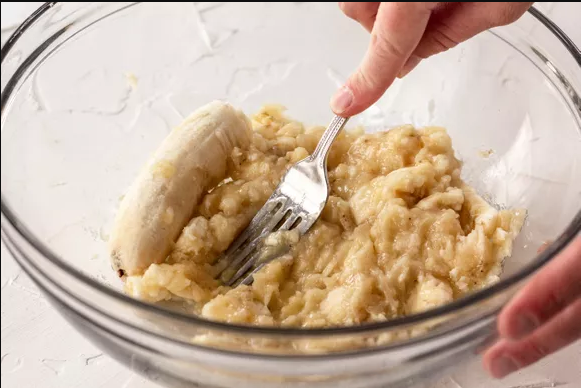
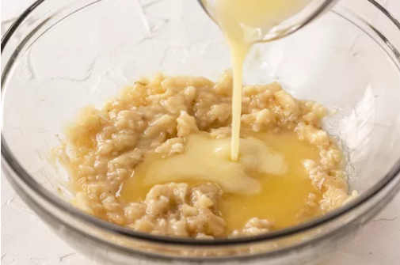
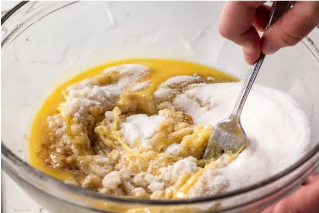
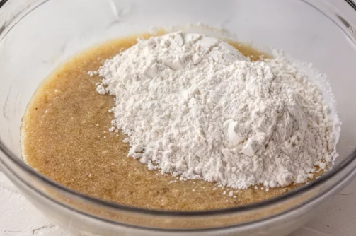
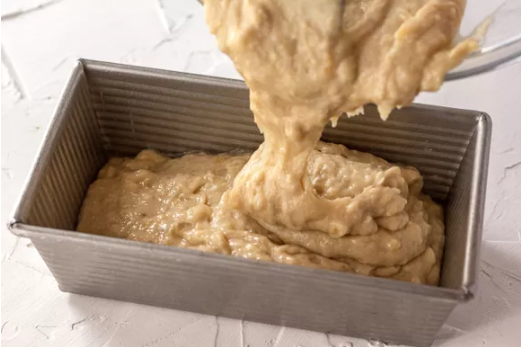
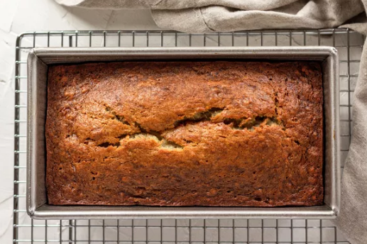
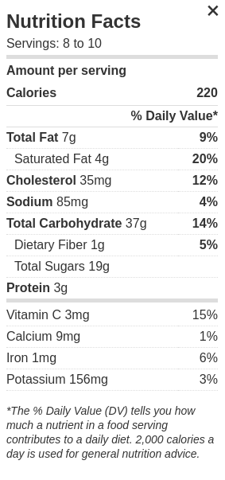

Easy Banana Bread Recipe
This is a very easy, delicions, modifyable banana bread recipe with minimal dishes and minimal effort!
You will need a large mixing Bowl and an 8 x 4-inch loaf pan, you can also use muffin tins if thats the end desired shape. You will also need basic measuring tools such as a scale or measuring cups/spoons
Ingredients
2 to 3 very ripe(nearly Black) Bananas if it isn't squishy it isn't ready. Peeled (about 1 1/2 cup mashed)
1/3 cup (76g) butter unsalted, melted but not hot
1/2 teaspoon baking soda (not baking powder)
1 teaspoon vanilla extract
1 1/2 cups (205g) all-purpose flour
1 teaspoon of spice of choice, pumpkin pie seasoning or cinnamon (you can also do half teaspoon of each)
Instructions
Step 1: Preheat the oven and prepare the pan
Preheat the oven to 350°F. Add olive oil spray or butter to all inside surfaces to the 8 x 4-inch loaf pan
Step 2: Mash the bananas and add the butter
In the mixing bowl, mash the ripe bananas with a fork until smooth. Stir in the melted(not hot) butter.


Step 3: Mix in the Remaining ingredients
Mix in the baking soda and salt. Stir in the sugar, beaten egg, and vanilla extract. Add walnuts or/and chocolate chips. Finally mix in the flour and spice. Should look like chunky cake batter.


Step 4: Bake the bread
Pour the batter into your prepared loaf pan. Insert into preheated oven and set timer for 55 to 65 minutes, or until a toothpick or wooden skewer inserted into the center comes out clean. A few dry crumbs are okay; streaks of wet batter are not. If the outside of the loaf is browned but the center is still wet, loosely tent the loaf with foil and continue baking until the loaf is fully baked.

Step 5: Cool and Serve
Remove from oven and flip carefully onto serving plate, serve with salted butter.

Finally the bread will store on the counter for 4 days and taste the best, you can also store in fridge for 5 days but it will go dry. To heat it up use a glass of water and microwave or toaster oven.
Warning you may want to double the recipe - 5/5 stars with 2239 raters
